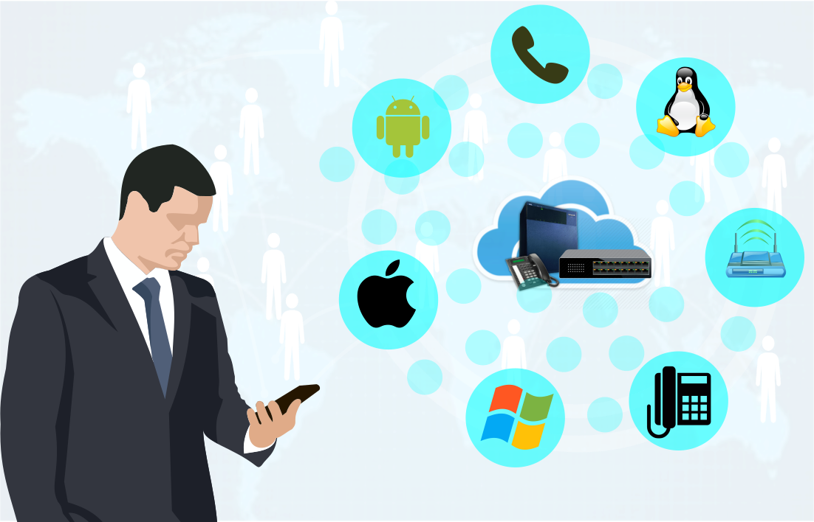

Plantas telefónicas SIP
Hasta hace un par de años contar con una planta telefónica SIP tenían un
precio inaccesible para el promedio de empresas, con esta SOLUCION pueden
contar con toda una plataforma de comunicación donde integraran computadoras
de escritorio y portátiles, dispositivos móviles, teléfonos IP y otros
dispositivos, logrando un control y optimizando el uso del recurso.
Características:
- Manejo de privilegios de llamadas salientes.
- Transferencia de llamadas.
- Conferencia de llamadas.
- Captura de llamadas.
- Desvío interno entre extensiones.
- Manejo de llamadas por medio de interacción automatizada con el usuario (IVR).
- Manejo de llamadas por colas, (ACDs).
- Manejo de llamadas por horario y por calendario.
- Grabación de llamadas para QT coaching.
- Programación de grabaciones por extensión.
- Reporte de grabaciones.
- Reportes de entrada y salida de llamadas.
- Reporte de ACds.
- Música en espera.
- Llamadas salientes.
- Uso de extensiones de oficinas.
- Terminales de agentes utilizando softphone.
- Supervisión en Vivo de llamadas.
- Desvió de celulares en caso de extensiones de oficinas.
- Correo de voz.
- Perfiles para delimitar las llamadas salientes, por extensión y por pin.
Características adicionales:
- Configuración de extensiones móviles a través del celular.
- Video conferencia.
- Salón de conferencia.
- Lista negra.
- Integración con otras centrales por medio de VoIP.
- Correo de voz a correo electrónico.